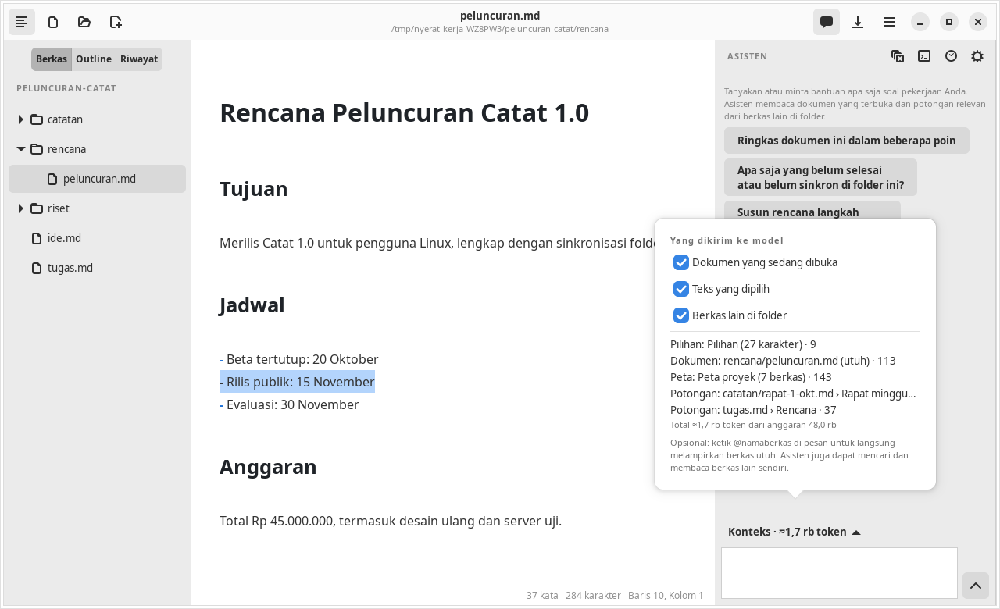

Agent
Konteks dan privasi
Model hanya tahu apa yang dikirim. Nyerat menyusun konteks otomatis dari ruang kerja, memperlihatkannya kepada Anda, dan memberi saklar untuk membatasinya.
Konteks yang disusun otomatis
Setiap pertanyaan membangun konteks baru, karena naskah bisa berubah di antara pertanyaan. Urutan prioritasnya:
| Bagian | Isi | Batas anggaran |
|---|---|---|
| Pilihan | Teks yang sedang dipilih | 8% |
| Dokumen aktif | Isi editor, termasuk yang belum disimpan; bila panjang, jendela di sekitar kursor | 40% |
Lampiran @berkas | Berkas utuh yang Anda sebut | 20% per berkas |
| Peta proyek | Nama, jumlah kata, dan heading tiap berkas Markdown di folder | 6% |
| Potongan relevan | Bagian berkas lain yang paling cocok dengan pertanyaan (paling banyak 10) | 40% |
Anggaran totalnya 48.000 token. Potongan relevan dicari dengan BM25 dari kata kunci pertanyaan, pilihan, dan dua pertanyaan sebelumnya. Tidak ada embedding, jadi tidak ada model yang diunduh dan naskah tidak dikirim hanya untuk pencarian.
Setiap baris naskah diberi nomor baris aslinya, sehingga kutipan agent menunjuk baris yang benar.
Melampirkan berkas dengan @
Tulis @namaberkas di pesan untuk melampirkan berkas utuh sejak pesan pertama. Agent tidak perlu satu putaran penelusuran untuk membacanya. Tanpa @ pun agent tetap bisa mencari dan membaca berkas sendiri.
Tombol Konteks
Tombol Konteks di bawah panel merinci apa yang akan dikirim beserta perkiraan tokennya, dan punya tiga saklar:
- Dokumen yang sedang dibuka
- Pilihan
- Berkas lain di folder: dimatikan, agent tidak mendapat alat baca maupun alat usulan sama sekali

Yang dikirim ke DeepSeek
Matikan saklar Berkas lain di folder dan Dokumen yang sedang dibuka untuk bertanya tanpa mengirim dokumen.
- Folder bertitik (termasuk
.nyerat/) dannode_modulestidak dibaca sebagai naskah. - Log agent dan proses berpikir model tidak dikirim ulang ke model dan tidak disimpan ke berkas.
- API key tidak ditulis ke pengaturan aplikasi.
Cache prefiks
Konteks dibagi supaya cache prefiks DeepSeek terpakai: instruksi, peta proyek, dan dokumen aktif berada di pesan system yang stabil; pilihan, kursor, lampiran, dan potongan relevan berada di pesan pengguna. Bagian yang dilayani dari cache tampil di rincian token tiap jawaban.